Data Scientist · AI Engineer · NLP — Learning Journey Portfolio
Ninditya Salma Nur Aini · 2021 → 2026
Learning
Journey
Portfolio
Data Scientist · AI Engineer · NLP Specialist
I started with an NLP thesis in 2021 — implementing KNN and LSA from scratch to build a working chatbot (GPA 3.66). That project gave me a first-principles understanding of vector semantics that made every subsequent representation learning model immediately intuitive. Since then I spent 2.4 years at Telkom Group designing chatbot flows and 1.5 years at Flip evaluating LLM quality in production — while building a portfolio that traces the full AI engineering stack: ETL pipelines, classical NLP, deep learning, production RAG, full-stack AI products, and team backend engineering.
0
Data Foundation
ETL Fashion E-Commerce Pipeline · 3 destinations · 100% branch coverage (2024)
1
NLP Foundation
Hate Speech Text Preprocessing API · LSA Chatbot Thesis · BiLSTM Sentiment (2021–2025)
2
Computer Vision
AquaSense YOLOv8 Evaluation · AquaSense IAA Sensor Reliability · StudioAI Stable Diffusion · GeoAI U-Net (2024–2025)
3
Data Science
Student Dropout 97.27% AUC · Employee Attrition 86% recall · Talent Match Intelligence (2025)
4
AI / LLM Systems
RAG v0→v1 · Banking Router −88% cost · NutriPal full-stack AI (2024–2025)
5
Team Backend
Yorindo EM·U AI-augmented backend (2026) · CineTrack 20+ analytics endpoints · Redis · LLM integration (2026 · KADA)
PHASE 0
Data Foundation
2024 · ETL · modular architecture · test-driven
3
Load destinations
CSV · PG · Sheets
3
Independent modules
extract · transform · load
100%
Branch coverage
per module
Why this project: Before building ML models, I needed to understand how data moves reliably from source to storage. This project forced a first-principles answer: what happens when one card out of 50 pages is broken HTML? I built the pipeline so the answer is always “that one card is skipped, everything else loads fine.” That failure-isolation principle applies to every data system I’ve built since.
Architecture: three independently testable layers. Extractor — extract_product() wraps all field access in try/except and returns None on any error; extract_data() skips None results with continue, so a single broken card never crashes the run. Transformer — validation chain ordered to fail fast: null titles → null prices → digit check (rejects “Price Unavailable”) → type normalization. Currency conversion uses an environment variable with a safe default. Loader — save_csv(), save_postgres(), save_gsheet() each follow the same interface contract: check empty → write → catch exceptions. One failing destination never blocks the others.
Architecture Decisions
| Decision | Implementation | Why |
|---|
| Per-card failure isolation | try/except inside extract_product() returns None; outer loop skips with continue | A broken card costs one row, not one run. Any single malformed card must not abort 1,500 other records. |
| Null-first validation order | Check null title → null price → digit validation → type coercion | Fail-fast on the cheapest check prevents expensive downstream type errors. Avoids silent NaN propagation into PostgreSQL. |
| Currency via env var | os.getenv(“CURRENCY_RATE”, default=1.0) in Transformer | Hardcoded constants require a code change and redeploy for every rate update. An env var makes it an operations concern, not a development concern. |
| MagicMock at every I/O boundary | DB connections, HTTP requests, and file handles all patched; integration tests use isolated test schema | Mocking at the boundary forced injectable dependencies. Architecture improved because tests demanded clean interfaces — 0 live deps in CI means no flaky tests. |
Challenges · Solutions · Learning
| Challenge | Solution | Key Learning |
|---|
| Single broken product card (null price, malformed HTML) crashed the entire scrape loop | Per-card try/except in extract_product() returning None; main loop skips None with continue. | Fail-safe per unit, not per run. Graceful degradation means the pipeline keeps going rather than leaving operators with no data. |
| Testing required live DB connections and real HTTP calls — slow CI, flaky tests | MagicMock patches DB and HTTP at the boundary; integration tests use a dedicated test schema cleaned between runs. 0 live dependencies in unit test suite. | Mocking boundaries forces clean interfaces — the architecture improved because tests demanded injectable dependencies at every I/O boundary. |
Fail Isolation Pattern
The per-card try/except pattern is idiomatic production ETL: isolate failure to the smallest meaningful unit. One broken product costs one row, not one run. Defining failure domains before success paths is the correct order of thinking.
Tests as Architecture Driver
MagicMock at every I/O boundary forced injectable dependencies. The architecture improved because the test suite demanded clean interfaces. 100% branch coverage is a design constraint, not just a quality metric.
Thread Forward
The failure-isolation mental model from this ETL pipeline reappears in Banking Router’s tier isolation: if Tier 2 (RAG) fails, the system falls back to Tier 3 (LLM) rather than crashing. Same pattern — define what failure looks like before you define success.
Key Takeaway: When the source HTML structure changed mid-project, only the Extractor needed updating — Transformer and Loader were unaffected. Separation of concerns is maintenance cost, measured in lines changed during the next schema break.
Stack: Python · Pandas · BeautifulSoup · PostgreSQL · Google Sheets API · pytest · MagicMock · Currency conversion via env var
PHASE 1
NLP Foundation
2021–2025 · classical NLP · statistics · deep learning · Bahasa Indonesia
13k+
Tweets multi-label
Ibrohim & Budi (2019)
12
Label categories
HS subcategory + intensity
2
Flask API variants
with / without stopword
3
SQLite databases
kamusalay · stopword · abusive
Context: Binar Academy Data Science Gold Challenge — building an Indonesian tweet text preprocessing pipeline for hate speech detection. The core challenge: Indonesian informal Twitter text (kata alay, slang, mixed scripts) is highly variant. Standard English NLP pipelines miss the majority of signal-bearing tokens. The project delivers a Flask REST API with Swagger documentation for cleaning and normalizing raw tweet text before any downstream classification.
Pipeline: case folding → cleansing (remove URLs, mentions, hashtags, symbols, numbers) → alay normalization via kamusalay.db (bgt → banget, gw → saya) → stopword removal (optional). Two API variants exist intentionally: stopwords like tidak and bukan are negation carriers in hate speech context — removing them destroys the very signal the classifier needs.
Pipeline & Architecture Decisions
| Decision | Approach | Why |
|---|
| Two API variants | API_Text_Preprocessing.py (no stopword) and API_Text_Preprocessing_with_stopword.py | Stopword removal is context-dependent. For hate speech, negation words (tidak, bukan, jangan) are semantic signal — removing them inverts meaning. |
| SQLite for normalization | kamusalay.db, stopword.db, abusive.db — indexed lookup at inference | Normalizing 13k+ tweets against a CSV on every request is slow. SQLite with indexed queries is orders of magnitude faster and supports batch file uploads. |
| Flasgger / Swagger UI | Auto-generated interactive API docs at /docs/ | API consumers can test single-text and batch CSV endpoints without building a client. Reduces integration friction for non-technical users. |
| Batch + single endpoints | /text-processing (single input) + /text-processing-file (CSV upload) | Supports both real-time interactive use and bulk preprocessing of the full 13k dataset. |
Alay Normalization is Critical
bgt, gw, tdk, org, gapapa are high-frequency signal words that standard tokenizers treat as out-of-vocabulary. Without kamusalay normalization, the majority of meaningful tokens in Indonesian Twitter text are invisible to any downstream model.
Stopword Dilemma
tidak, bukan, jangan are Indonesian stopwords but negation carriers. Removing them from hate speech text can flip the polarity of a sentence. The “right” preprocessing depends on the downstream task — which is why both API variants exist.
Thread to LSA Thesis
Same lesson as 2021: what you put into the model determines what the model can learn. LSA needed correct stemming; this project needs correct alay normalization. The preprocessing layer is always the critical lever in Indonesian NLP.
Stack: Python · Flask · Flasgger (Swagger UI) · Pandas · NLTK · regex · SQLite · SQLAlchemy · Jupyter Notebook
93.2%
LSA+KNN accuracy
↑ from 92.1% baseline
−35%
Compute time
27.49s → 17.97s
+3pp
Recall improvement
vs KNN baseline
1,410
Student questions
via form collection
k=50
SVD latent dims
tuned on held-out acc
Why this project started everything: Informatics department staff were manually answering the same 20 student questions, limited to office hours. I built a chatbot that answers 24/7. But the more important discovery was this: switching from raw TF-IDF to LSA-projected features improved both accuracy (+1.1pp) and compute speed (−35%) using the exact same KNN classifier. The classifier didn’t change — only the feature space did. This is the founding insight that made every NLP model I studied after 2021 immediately intuitive: representation quality determines what models can learn.
Web App — NLP Pipeline Visualization

Web interface showing the full NLP pipeline step-by-step: input → preprocessing → TF-IDF → SVD decomposition → LSA projection → KNN → answer. Built to make the model interpretable, not just usable.
Telegram Bot — Production Deployment

Deployed as a Telegram bot accessible to all informatics students 24/7. Answering FAQ queries about academic administration without staff involvement.
Architecture Decisions
| Decision | Configuration | Why |
|---|
| Stemmer: Nazief-Andriani | Indonesian morphology via Sastrawi/Nazief-Andriani library | Indonesian affixation is complex: “mendaftarkan”, “pendaftaran”, “daftar” must reduce to the same root. Porter Stemmer (English) would corrupt these entirely. |
| Dimensionality: k=50 SVD | TF-IDF matrix → SVD → 50 latent dimensions | k=50 balances semantic generalization vs. corpus specificity. At k=5, too much compression loses topic boundaries; at k=200, noise from rare terms re-enters. Tuned on held-out accuracy. |
| Distance: Manhattan over Euclidean | KNN with Manhattan distance metric | Compared both empirically on validation set. Manhattan outperformed Euclidean on LSA-projected sparse vectors in this domain — LSA coordinates are not isotropic. |
| Inference: PHP JAMA matrix load | Precomputed SVD matrix serialized as JSON; PHP loads + applies transform at query time | No Python runtime in PHP production environment. Inference = one matrix multiply (query vector × precomputed projection matrix). Training runtime irrelevant to serving. |
Challenges · Solutions · Learning
| Challenge | Solution | Key Learning |
|---|
| KNN on raw TF-IDF sparse vectors failed on synonym variation — “biaya” vs “bayar” share no surface tokens but mean the same thing | LSA projects both terms to nearby positions in the k=50 latent semantic space — geometric proximity reflects semantic proximity regardless of surface word choice | SVD creates a continuous meaning space from a discrete co-occurrence matrix. This is the same operation transformers do at scale. Understanding SVD from scratch made SBERT immediately intuitive. |
| PHP production runtime had no Python — couldn’t call the training environment for inference | Serialized trained SVD matrix + KNN index; PHP loads and applies the matrix transform via JAMA. Inference = one matrix multiply. | The training runtime is irrelevant to production serving — only the serialized parameters matter. Inference is just a matrix transform on new input. |
Representation > Classifier
The classifier didn’t change — only the feature space did. LSA improved accuracy and speed using identical KNN. The feature representation layer is the highest-leverage decision in any NLP pipeline. This is the insight I’ve applied to every NLP problem since 2021.
Indonesian NLP From Scratch
Building for Bahasa in PHP with no NLP library forced first-principles understanding: Nazief-Andriani stemmer, TF-IDF by hand, SVD via JAMA. No abstraction to hide behind. Every framework decision became legible because I had built the underlying operation manually first.
Thread Forward to SBERT
LSA (2021): TF-IDF → SVD → latent semantic space → KNN. SBERT (2025): token embeddings → transformer → dense semantic space → LinearSVC. Same pipeline, better learned representation. The 2021 thesis made the 2025 Banking Router architecture immediately intuitive.
Key Takeaway — Foundation That Unlocked Everything: LSA → Word2Vec → SBERT → Transformer attention all solve the same problem: map meaning into a continuous vector space where geometric proximity = semantic proximity. Every NLP model I built after 2021 was a re-encounter with the same idea, at a larger scale.
Stack: PHP · MySQL · JavaScript · Telegram Bot API · JAMA Libraries (SVD/matrix ops) · Nazief-Andriani Indonesian stemmer · TF-IDF term-document matrix · KNN (Manhattan distance)
93%
BiLSTM accuracy
F1 0.9328
85.3%
Gemini zero-shot
F1 0.8404
0.25ms
BiLSTM inference
vs ∼800ms Gemini
$0
BiLSTM annual cost
vs $62+ Gemini
288
GridSearch configs
tested
Real motivation — from Flip: At Flip I managed prompts for a GenAI-based sentiment system — but had no way to measure whether my prompt changes actually improved accuracy. There was no controlled baseline. This project answers the empirical question I couldn’t answer there: for Indonesian tweet sentiment, does a domain-tuned ML model outperform zero-shot GenAI? The result: yes — on accuracy, speed, and cost simultaneously. GenAI is not universally better. Context and domain determine the right tool.
BiLSTM Training History — Convergence at Epoch 8

EarlyStopping(patience=5) + restore_best_weights. Converged at epoch 8 without overfitting — effect of SpatialDropout1D(0.4) + L2 regularization on short, noisy tweet inputs.
Accuracy Comparison — All Models & Configurations

BiLSTM (93%) outperforms all baselines. GenAI zero-shot (85.3%) is below ML classical. Few-shot examples from wrong domain actively hurt GenAI accuracy — domain mismatch makes examples noise, not signal.
BiLSTM Architecture Decisions
| Architecture Decision | Configuration | Why |
|---|
| Embedding layer | Vocab 100,000 · dim 128 · trainable | Captures Bahasa Indonesia slang: “gue”, “gapapa”, “tdk”, “udh”, “bgt” — fixed pretrained embeddings trained on English or formal Indonesian miss these completely. |
| Regularization | SpatialDropout1D(0.4) + L2(0.001) + recurrent_dropout=0.4 | Tweets are 5–30 tokens — high overfitting risk without explicit regularization. SpatialDropout1D drops entire embedding dimensions, more effective for sequence data. |
| Bidirectional LSTM | BiLSTM 64 units — processes sequence forward and backward | Bidirectional context detects irony and implicit negative sentiment. “Bagus banget ya” (sarcasm) requires both directions — left-to-right misses the sarcastic modifier at the end. |
| Neutral class handling | Oversampled before training (10% of dataset) | Without oversampling, neutral recall collapsed below 30%. Neutral class is only 10% of dataset (positive 58%, negative 31%). |
| Data leakage fix | KFold strictly on training set only — test set never used in fold generation | Found a bug from 2023 submission: KFold was applied across the full dataset. Corrected — honest accuracy is 91.09%, not the inflated 92%. Reported the lower number. |
Challenges · Solutions · Learning
| Challenge | Solution | Key Learning |
|---|
| 288 configs × 5 folds = 1,440 training runs; some configs triggered gradient explosion mid-training | Gradient clipping (max norm 1.0) on all runs; a canary run on 10% data exposed unstable configs cheaply before committing to full training | Canary runs before GridSearch — 2 epochs on 10% data find gradient explosions at 5% of the compute cost. Don’t discover them 40 hours into a full sweep. |
| Gemini API returned malformed JSON for ∼3% of batch requests (rate-limit partial responses) | Retry with exponential backoff; JSON schema validation on every response; fallback to “Neutral” after 3 consecutive failures per sample | GenAI APIs are non-deterministic at the infrastructure level — robustness handling is mandatory even for benchmarking. Flaky eval = invalid conclusions. |
GenAI Insight — Zero-Shot Best
Zero-shot (85.3%) outperformed 3-shot, 5-shot, 10-shot, and Chain-of-Thought. Few-shot examples from e-commerce domain actively hurt accuracy — wrong-domain examples are noise, not signal. Domain adaptation matters more than example count when prompting LLMs.
Cost Reality at Scale
GenAI at 10K requests/day: $62/year (zero-shot) to $304/year (CoT). BiLSTM: $0/year after training, 0.25ms inference vs ∼800ms for Gemini API. For a known, bounded domain with labeled data, the trained model wins on every production dimension simultaneously.
Thread to Banking Router
The empirical finding here — classifiers beat GenAI on known domains — directly motivated the Banking Router’s 4-tier design. Use a classifier (SBERT+LinearSVC) for the 95% of queries with predictable patterns; escalate to LLM only when the classifier genuinely can’t cover it.
Stack: Python · TensorFlow/Keras (BiLSTM) · scikit-learn (TF-IDF+MLP) · Gemini Flash 2.0 API via OpenRouter · Flask + Swagger API · 5-fold CV · 288 GridSearch configs
PHASE 4
AI / LLM Systems
2024–2025 · RAG · LangGraph · production · cost engineering · full-stack
Goal: Health misinformation debunker: user submits a health claim → system retrieves evidence → Gemini generates a grounded response. First end-to-end RAG implementation. Chunking experiments: 300 tokens · 500 tokens · 1,000 tokens — evaluated by retrieval precision@k=3 on held-out queries. 500 tokens balanced retrieval precision vs. answer completeness.
HealthTruth-AI v0 — Hackathon Submission
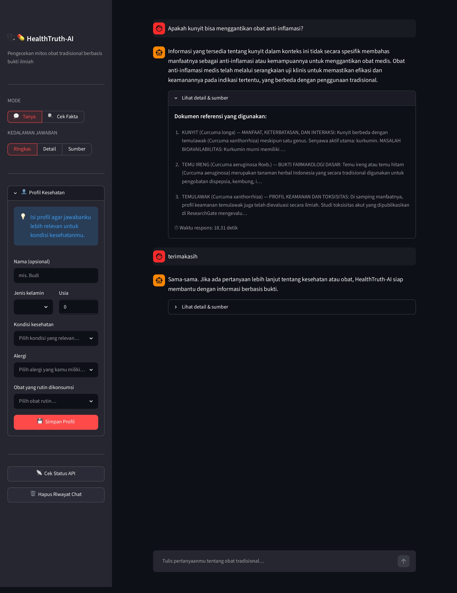
Tampilan awal v0: linear RAG chain dengan FAISS in-memory. Hardcoded cosine threshold gate — jika top-1 cosine similarity <0.6, mengembalikan fallback message. Gate binary (block/pass) tanpa kemampuan routing berdasarkan confidence level.
Linear chain: query → embed → FAISS kNN → top-k docs → Gemini prompt → response. Added a similarity threshold gate: if top-1 cosine similarity <0.6, return a fallback message instead of generating — preventing the worst hallucinations. But the gate was binary (block/pass) with no ability to route differently based on confidence level.
RAG Without Routing = Risk
A linear chain generates confidently even when retrieval returns low-relevance documents — cited real documents for wrong answers. A similarity gate is necessary but a binary block/pass has no ability to route differently based on confidence level.
Chunking Trade-off Measured
300 tokens: better retrieval precision@3 but truncated answers. 1,000 tokens: complete answers but noisy retrieval. 500 tokens empirically balanced precision and completeness — measured, not assumed.
Thread Forward to v1
The binary gate’s inability to distinguish “no docs” from “tangential docs” precisely defined the v1 requirements: conditional routing per confidence regime, not binary block/pass. The limitation of v0 was the specification for v1.
Stack: Python · FAISS · Gemini API · LangChain (simple chain) · Streamlit · text-embedding (768-dim)
Architecture: 5 classes: EmbeddingService · DocumentStore · RagWorkflow · HealthRouter (Routes.py) · chatbot.py (Streamlit). LangGraph 3-node graph: retrieve → route → answer. score_threshold=0.4 · top_k=3 · 35+ health topics covered · Zero hard crashes in production.
System Architecture — LangGraph + Qdrant + Personalization Layer
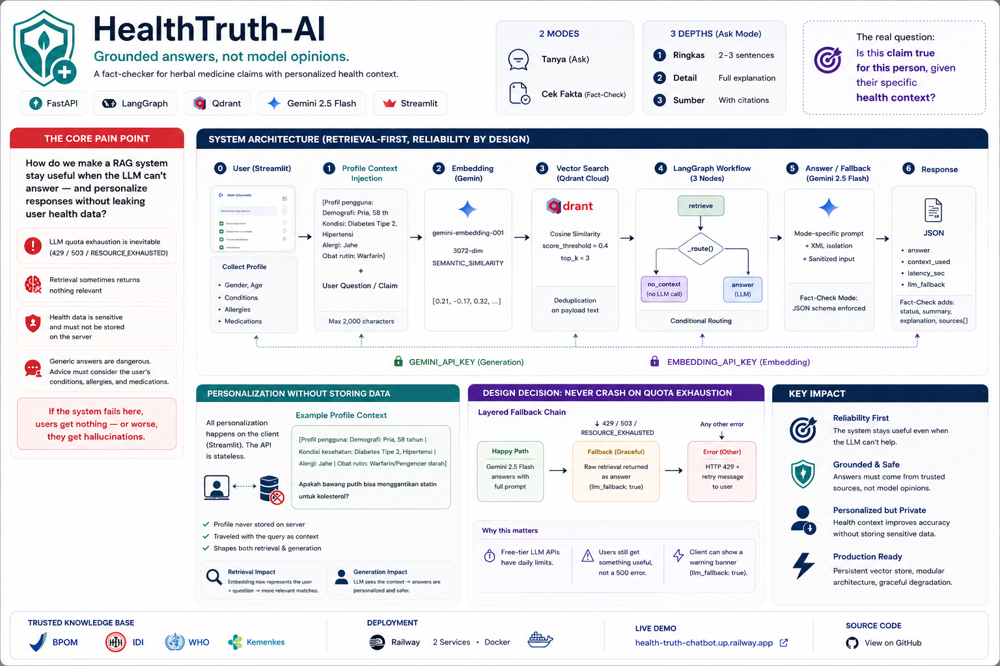
v0 → v1 refactor: FAISS in-memory → Qdrant persistent; monolith → 5 single-responsibility classes; flat prompt → profile context injection; crash on quota → layered graceful degradation. Zero hard crashes in production.
Three production engineering challenges solved:
① Layered fallback chain — RagWorkflow._answer() catches Gemini 429/503 errors and falls back to returning the raw retrieved context. System degrades gracefully; users still get the source documents even when Gemini is down.
② Quota isolation — retrieval (embedding-001) and generation (Gemini 2.5 Flash) hit different models with separate quota budgets. One key exhausting doesn’t kill both services.
③ Prompt injection defense — XML delimiters make the boundary between trusted knowledge and user-supplied content structurally explicit. RagWorkflow._sanitize() strips control characters before they reach the prompt template.
Conditional Routing via Graph
_route() after retrieval: context found → answer node (LLM generates). No context → no_context node (raw context shown, no LLM call). Zero wasted LLM calls — the expensive generation path is only taken when retrieval genuinely succeeded. A chain can’t express this logic; a graph can.
Defense in Depth
Three independent injection defenses: XML delimiters (structural boundary) + _sanitize() (strips control characters) + response_mime_type=“application/json” (schema-constrained output). Security is layered, not single-point.
Vector DB = Operational Choice
FAISS → Qdrant was a one-file swap because of OOP class separation (EmbeddingService, DocumentStore, RagWorkflow). At <100K vectors, FAISS/Qdrant/Pinecone perform similarly. Choose on: persistence, filter support, deployment model — not accuracy benchmarks.
Stack: FastAPI · Qdrant · LangGraph · Gemini 2.5 Flash · Streamlit · Docker (2 containers) · Railway
0.9305
F1 Macro
Banking77 benchmark
−88%
Cost reduction
$0.050 → $0.0056/query
∼50ms
Avg latency
weighted across tiers
4
Routing tiers
regex→template→RAG→LLM
The insight that made this project: From the BiLSTM benchmark — GenAI is not universally better than ML; domain fit and cost determine the right tool. From the LSA thesis — dense semantic representation changes outcomes more than model choice. Banking Intent Router applies both: route 80% of queries through cheap classifiers (SBERT+LinearSVC), reserve the expensive LLM for the ∼5% the classifier genuinely can’t handle. Cost engineering is not a compromise — it’s an architecture decision.
4-Tier Routing Economics
| Tier | Trigger | Mechanism | Cost | Latency |
|---|
| 0 · Conversational | Bilingual regex (EN + ID) | Greetings/farewells matched before model runs | $0.000 | <1ms |
| 1 · Template | confidence ≥0.55 | High-confidence intent → pre-written FAQ answer | $0.001 | ∼8ms |
| 2 · RAG | 0.30 ≤ conf <0.55 | Top-3 from FAISS 59-entry KB → Gemini prompt | $0.010 | ∼300ms |
| 3 · LLM Escalation | conf <0.30 | Full LLM call — only ∼5% of traffic reaches here | $0.050 | ∼800ms |
System Architecture — 4-Tier Routing Pipeline
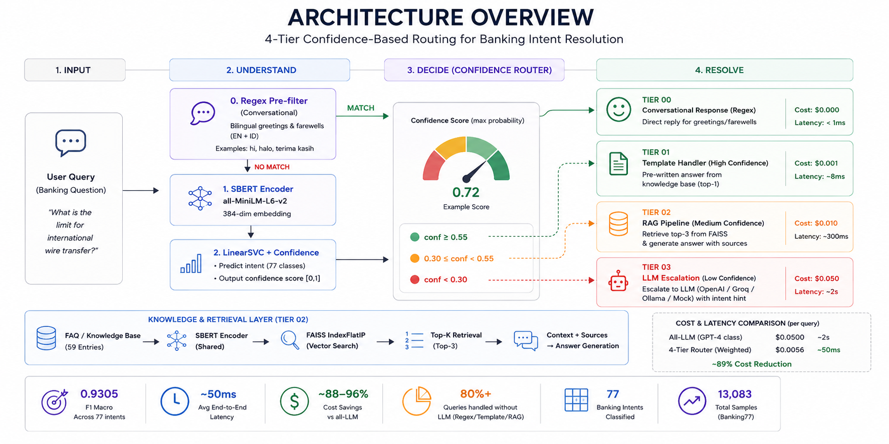
Query → SBERT embedding (384-dim) → LinearSVC confidence scoring → routing decision → tier handler. 12 Prometheus metrics monitored via Grafana Cloud. Tier 0+1 handles ∼80% queries at $0.
Grafana Monitoring Dashboard — Live Production Metrics
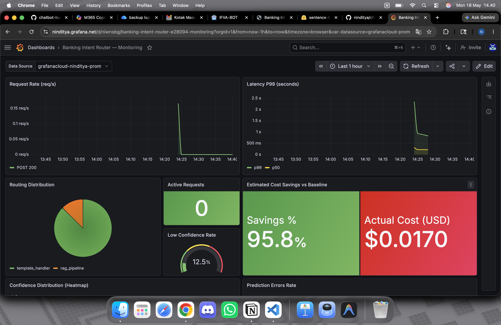
12 custom Prometheus metrics via remote_write (protobuf + snappy compression): request volume per tier, latency distribution, cost tracker, routing ratio. Every request logged, no aggregation loss.
Challenges · Solutions · Learning
| Challenge | Solution | Key Learning |
|---|
| SBERT inference at ∼45ms per query was too slow for production | Precomputed per-class SBERT centroids at training time; inference encodes only the query, then cosine-distances against precomputed centroids — O(1) per class | Embedding precomputation turns O(N×D) online cost into O(1×D). Pattern generalizes to any dense-retrieval system where the candidate corpus is static. |
| Confidence threshold calibration: too tight → over-escalates to LLM; too loose → wrong answers returned as “confident” | Plotted confidence score distributions per tier; calibrated boundaries using precision-recall curves; validated on held-out test mix of known traffic proportions | Threshold calibration is a business decision. The right boundary depends on the relative cost of a wrong answer vs. the cost of one LLM call — not on a default like 0.5. |
NLP Model: Calibrated Confidence
SBERT (all-MiniLM-L6-v2) → LinearSVC with calibrated probabilities. Not a raw transformer classifier — LinearSVC on SBERT embeddings gives calibrated confidence scores, which is what the routing tier decision actually needs. Raw transformer logits are not probability-calibrated.
Threshold = Business Decision
The confidence boundaries (≥0.55 / 0.30–0.55 / <0.30) aren’t ML defaults — they’re cost trade-off decisions. Plotted confidence distributions per intent cluster; set thresholds empirically based on the relative cost of a wrong answer vs. one LLM call. There is no universally correct threshold.
Thread from Thesis (2021)
LSA (2021): TF-IDF → SVD → cosine similarity → KNN. Banking Router (2025): SBERT → LinearSVC → calibrated confidence → tier routing. Same insight at a different scale. Dense semantic representation was intuitive because I built the underlying SVD operation from scratch in PHP four years earlier.
Key Takeaway: 80% of banking queries are repetitive FAQs that don’t need an LLM. The best AI architecture uses AI exactly where it’s needed — not everywhere by default. Prometheus monitoring made tier hit-rates visible in real time; without observability, you can’t know which tier is doing the work or when a threshold needs recalibration.
Stack: SBERT (all-MiniLM-L6-v2) · LinearSVC · Banking77 (13,083 samples · 77 intents) · FAISS RAG · FastAPI · MLflow · Prometheus · Grafana Cloud · Docker · HuggingFace Spaces
PHASE 3
Data Science
2025 · IDCamp Expert · end-to-end pipelines · dashboards · business impact
92.42%
Accuracy
XGBoost final model
90.37%
F1-Score
dropout class · 5-fold CV
97.27%
ROC-AUC
XGBoost final model
13.8%
Dropout rate
scholarship holders
∼1,325
Students potentially
saved w/ intervention
Business problem: Jaya Jaya Institut’s 32.12% dropout rate (2008–2015) had no early warning system — the institution was reacting after students had already left. Solution: detect at-risk students in semesters 1–2 (the only window where intervention is still possible), then route them to the right support: academic tutoring, financial aid, or scholarship referral.
SHAP Feature Importance — Top Risk Drivers
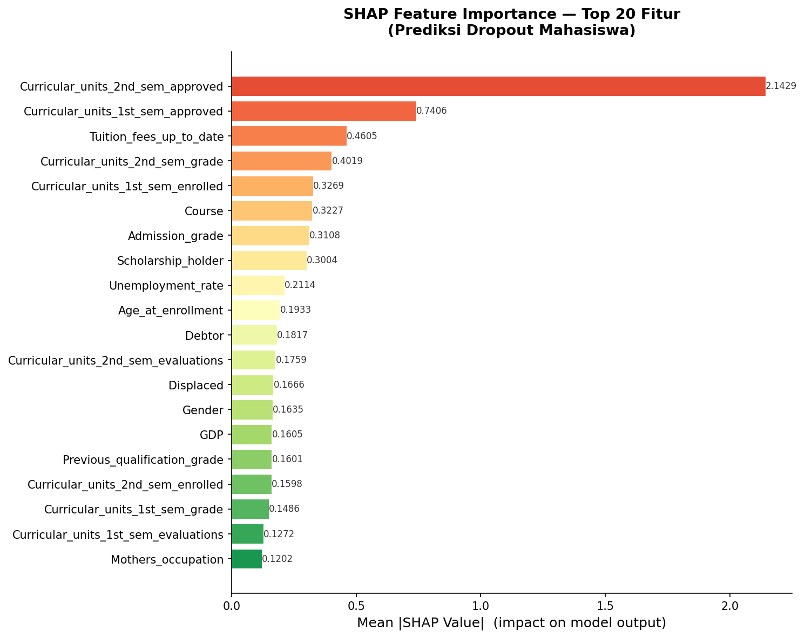
SHAP values showing top features: Curricular Units 2nd Sem Approved (2.14) as strongest predictor. Tuition Fees Up-To-Date (0.46) — students with overdue payments have dropout probability >90%.
Streamlit Prediction App — Counsellor Interface
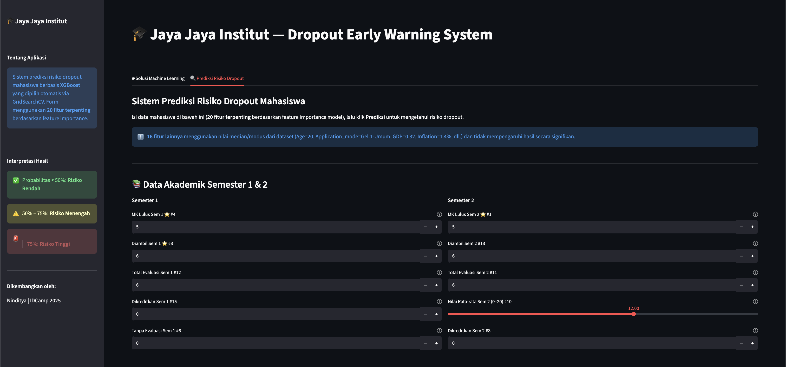
20-field form for student counsellors: input semester 1–2 data → dropout risk prediction → intervention page with before/after impact simulation. Designed for non-data-scientist audience.
Top Risk Signals — Feature Importance + Observed Dropout Rate
| Signal | Importance | Observed Dropout Rate | Intervention |
|---|
| Curricular units sem 2 approved | 28.6% | 74–88% if <4 units | Academic alert · tutoring from sem 1 |
| Tuition fees overdue | 10.7% | 94.0% | Financial aid referral |
| Enrolled units sem 1 | 4.9% | High if enrolled > capacity | Course load advisory |
| Scholarship holder | 2.7% | 13.8% (−58% vs avg) | Expand scholarship access |
Metric Defines the Goal
F1 + Recall on the dropout class — not overall accuracy — is the only metric that measures whether the system can do its job. The business question “will this student drop out?” requires a metric that penalizes missing at-risk students. Choosing the metric IS defining the problem.
SHAP as Action Layer
SHAP feature importance connects model to intervention. Scholarship holders drop out at 13.8% vs 48.4% — SHAP confirms the causal channel: financial stability changes academic behavior. Feature importance is the bridge from model output to stakeholder action.
Dashboard Design
Looker Studio 4-page dashboard + 20-field Streamlit prediction form. Looker: institutional view for administrators. Streamlit: student counsellor tool with intervention simulation. One model, two audiences, two interfaces — designed for the actual user, not the data.
Stack: Python · XGBoost (selected over RF via GridSearchCV) · SMOTE (imbalanced-learn) · SHAP · Streamlit (20-field form + intervention page) · Looker Studio dashboard
86%
Recall
attrition class (XGBoost)
16.9%
Annual attrition rate
baseline Jaya Jaya Maju
5
Metabase dashboard tabs
Docker Compose deploy
50–200%
Cost of missing
one attritor (salary %)
Problem: Jaya Jaya Maju’s 16.9% annual attrition had no systematic predictor — HR was reacting, not preventing. Constraint: False negatives are expensive (50–200% of annual salary per missed attritor). Primary metric is Recall on the attrition class, not overall accuracy — a model predicting “stay” for everyone would score 83% accuracy but be completely useless.
Risk Factor Analysis
| Risk Factor | Attrition Rate | vs Average 16.9% | Recommended Action |
|---|
| Overtime (Yes) | 31.9% | ∼3× | Monitor overtime hours per department |
| Salary bottom quartile | 29.1% | ∼3× | Benchmark compensation vs market |
| Tenure ≤1 year | 34.6% | ∼4× | Structured 90-day onboarding programme |
| Age 18–25 | 38.0% | ∼4× | Career pathing + mentorship for early career |
| Sales Representative role | 43.1% | highest role | Role-specific retention programme |
Custom Transformer Pipeline
HRFeatureEngineer — custom scikit-learn transformer encoding domain-specific features: overtime×salary interaction, tenure brackets, role-level risk flags. Same transforms apply at training and inference with no divergence.
Model Selection Logic
XGBoost had lower accuracy than RF (60% vs 74%) but was selected because it had higher recall on the minority attrition class (86% vs 72%). The cost matrix — missing an attritor costs 50–200% of salary — made recall the only metric that mattered.
End-to-End Delivery
SQLAlchemy batch writes to PostgreSQL → Metabase reads automatically → Early Warning tab populated. 4-tab dashboard for HR without any SQL or Python knowledge required. The final mile (turning signal into visible action) is as important as the model.
Stack: Python · XGBoost · custom sklearn Transformer (HRFeatureEngineer) · SMOTE · SQLAlchemy batch write → PostgreSQL · Docker · Metabase (4 tabs: Executive Summary · Compensation & Workload · Satisfaction & Engagement · Demographics & Career)
3
Analysis stages
EDA → SQL match → AI app
TV→TGV→Final
Weighted CTE pipeline
match rate computation
5
Data sources fused
competencies · psychometrics · PAPI · CliftonStrengths · context
LLM
AI job profile generation
OpenRouter MiniMax M2.5
Problem: Given a dataset of employees rated 1–5 across competencies, psychometrics, PAPI work preferences, CliftonStrengths, and contextual factors — identify what differentiates Rating-5 performers (the success pattern) and compute how closely any employee matches a vacancy’s benchmark profile. Deliverable: A live Streamlit app where recruiters input a job profile (or generate one via LLM) and see ranked candidate match scores from a CTE-based SQL algorithm.
SQL Matching Algorithm — TV → TGV → Final Match Rate
| Stage | What It Computes | Output |
|---|
| Talent Variable (TV) | Per-dimension score for each employee across all data sources | TV score per dimension |
| Talent Group Variable (TGV) | Weighted aggregate of related TVs into meaningful competency clusters | TGV score per cluster |
| Final Match Rate | Weighted sum of TGV scores against vacancy benchmark via PERCENTILE_CONT | 0–100% match score per candidate |
| Ranking | RANK() OVER (ORDER BY final_match_rate DESC) | Ranked candidate shortlist |
Success Pattern First
Before writing any matching logic, the analysis identifies what a Rating-5 employee actually looks like across all five data sources. You can’t match against a benchmark you haven’t defined. EDA is not a step before the work — it is the work.
PERCENTILE_CONT as Robust Benchmark
Using PERCENTILE_CONT(0.5) (median) over AVG for benchmark computation — robust to outlier performers who would pull the average above a reachable threshold. Statistical method choice is a business decision: do you want a benchmark most employees can meet, or one only outliers can?
LLM as Input Layer
Recruiters who don’t know how to fill a structured benchmark form can describe the role in natural language → LLM generates the competency profile → SQL algorithm scores candidates against it. LLM solves the cold-start problem for the matching algorithm.
Stack: Python · SQL (CTE-based matching, PERCENTILE_CONT, RANK()) · Supabase (Postgres) · Pandas · Plotly · Streamlit · OpenRouter (MiniMax M2.5) · Jupyter Notebook
PHASE 4
AI / LLM Systems
2025 · full-stack AI · production AI products · solo concept-to-ship
5
Genkit AI flows
Gemini 2.5 Flash Vision
4
API keys rotated
zero quota downtime
3
Custom Realtime hooks
Supabase · no polling
3 wks
Concept to live
product, solo
Goal: Snap a food photo → AI identifies dish, estimates portions, calculates macros, flags allergens against user biometric + dietary profile. 5 distinct Genkit AI flows. No Redux/Zustand. Custom hooks (useDailyLog · useMeals · useProfile) each subscribe directly to Supabase Realtime channels scoped to the current user. 4-key rotation via executeWithRotation() — zero quota downtime for end users.
Product Loop
The new case study reframes NutriPal around three loops: daily energy balance, photo-to-meal logging, and next-meal recommendation. The product risk is not feature count; it is whether each loop becomes real enough to change ordering behavior.
System Analysis
The promoted case study documents target users, requirements, architecture, ERD-level data thinking, business model assumptions, and validation priorities for the Indonesian food-ordering context.
Build Priority
The next build phase focuses on a live delivery catalogue, real wearable connection, and a reminder loop that actually brings users back after the initial logging moment.
Allergen Prompt Engineering
Reliable allergen detection required a two-step prompt: identify actual ingredients first, then check against user’s allergen list. Single-step “flag allergens” produced unreliable results. Framing the reasoning order in the prompt mattered more than the prompt phrasing itself.
Rate Limits as Architecture
4 API keys in rotation via executeWithRotation() = production-grade pool at $0. Same insight as Banking Router tier design: intelligent routing at the infrastructure layer prevents the user from ever seeing a quota error.
Full-Stack AI Solo
First time building a complete AI product alone end-to-end: Next.js frontend + Genkit AI layer + Supabase auth + Realtime DB + Vercel deploy. Three weeks concept to live. Proved I can ship production-quality AI across the full stack independently, under time pressure.
Stack: Next.js 15 · React 19 · TypeScript · Genkit framework · Gemini 2.5 Flash Vision · Supabase Realtime · Vercel · 4-key API rotation via executeWithRotation()
PHASE 2
Computer Vision
2025 · YOLOv8 evaluation · label alignment · client deliverable
67.4%
Precision
plastic waste detection
52.0%
Recall
378 test images
83.2%
Mean IoU
on true positives
0.410
AP @ IoU 0.50
best achievable F1: 0.594
Two connected problems: (1) Evaluate a pretrained YOLOv8 model against a client test set where the labelling scheme differs — model has 5 classes, client uses 1 merged “plastic bottle” class. Label alignment required before any metric is valid. (2) Produce a 10-slide client presentation with a clear verdict and deployment recommendation. Both tasks required deciding what to measure before measuring it.
Label Alignment Challenge — Model vs Client Schema
| Model Class | Plastic? | Approach | Result |
|---|
| plastic_water_bottles (class 4) | Yes | Merged → single “plastic” class | 414 predictions |
| plastic_soda_bottles (class 3) | Yes | Merged → single “plastic” class | 62 predictions |
| aluminum_soda_cans (class 0) | No | Excluded from evaluation | 14 predictions (not scored) |
| glass_beverage_bottles (class 1) | No | Excluded from evaluation | 51 predictions (not scored) |
Evaluation Results & Verdict
| Metric | Value | Interpretation |
|---|
| Precision | 67.4% | When model fires, it’s usually correct — matches client priority (false positives more costly) |
| Recall | 52.0% | Misses 1 in 2 bottles — 296 of 617 GT bottles undetected |
| Mean IoU (TP) | 83.2% | Excellent localisation when the model fires |
| Verdict | Not ready for deployment at conf=0.25. Raise threshold to 0.40–0.50, then fine-tune on hard-negative images to recover recall. |
Label Alignment First
Model classes 3+4 must be merged before evaluation. Running metrics on the raw 5-class output vs a 1-class GT scheme produces meaningless numbers. Schema alignment is a prerequisite, not a post-processing step.
Precision vs Recall Trade-off
Client prioritised false positives as more costly. At conf=0.25: Precision 67.4%, Recall 52%. Raising conf to 0.40–0.50 will improve precision at some recall cost — the right trade-off for this client. Threshold choice is a business decision, not just a technical one.
Deliverable: 10-Slide PowerPoint
Built a client presentation auto-generated from metrics.json via build_presentation.py. Slides rebuild automatically after any conf threshold change. The pipeline produces not just metrics but a reproducible client-ready artefact.
Stack: Python · YOLOv8 (Ultralytics) · HuggingFace Hub · python-pptx (auto-generated presentation) · pandas · numpy · scipy · matplotlib
0.984
CCC — M2 vs M3
effectively interchangeable
0.889
ICC(A,1)
overall agreement (non-zero)
−49k
M1 systematic bias
cells/mL vs M2 & M3
3
Counting methods
compared pairwise
Why this project: The stakeholder asked for Pearson r as the reliability metric. I built this analysis to demonstrate why that’s the wrong question — and to deliver the right answer instead. Two counting methods can correlate at r=0.99 while differing by 30,000 cells/mL on every individual measurement. Pearson tells you about the relationship; Bland-Altman tells you about the disagreement. Only one of those answers the operational question: “can we replace M1 with M2?”
Three pairwise Bland-Altman comparisons: M1 vs M2 and M1 vs M3 both showed large negative bias (∼−49,000 cells/mL) with proportional error — the disagreement grows as concentration increases, a pattern that cannot be corrected by a scalar offset. By contrast, M2 vs M3: near-zero bias (+694 cells/mL), CCC=0.984 — effectively interchangeable. Spearman for M2 vs M3 returned 0.630 — misleadingly low due to zero-inflation. CCC was the correct metric for this data structure.
Bland-Altman Analysis Panel — Inter-Annotator Agreement
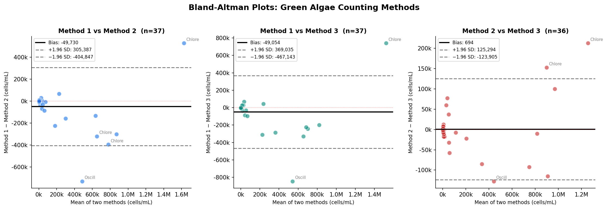
M1 vs M2 and M1 vs M3: large negative bias (∼−49k cells/mL), proportional error — cannot be corrected by scalar offset. M2 vs M3: near-zero bias (+694), CCC=0.984. Spearman=0.630 misleadingly low due to zero-inflation in the dataset.
Metric Matches the Question
An agreement question needs an agreement metric. Pearson r can be 0.99 while both methods differ by 49k cells/mL on every measurement. Framing the analysis correctly is the analyst’s first deliverable.
Zero-Inflation Diagnosis
Spearman=0.630 vs CCC=0.984 for M2 vs M3. Root cause: zero-inflation collapsed Spearman’s rank signal. When two metrics disagree sharply, diagnose the data structure before choosing which to report.
Verdict
M2 and M3 are interchangeable (CCC=0.984). M1 has proportional systematic bias — cannot be corrected by a simple constant and should not be used as a reference standard for model training.
Stack: Python · R · Bland-Altman analysis (±1.96 SD LoA) · ICC(A,1) via pingouin · CCC (Lin’s) · pandas · scipy · matplotlib
4
Schedulers compared
Euler A · DPM++ · DDIM · PNDM
7.5
Optimal CFG scale
measured empirically
30
Optimal steps
diminishing returns past this
3
Masking approaches
manual · CLIPSeg · canvas
Goal — not just to generate images: To understand what each hyperparameter actually does by measuring it. Built from scratch using HuggingFace Diffusers (PyTorch), not a high-level wrapper — so every decision is observable and measurable. Two-stage pipeline: base model at denoising_end=0.8, refiner at strength=0.2 (latent-space passthrough). Two Streamlit tabs: Generate + Edit (inpainting/outpainting). Same epistemological question from the LSA thesis: what is the right representation?
CFG Scale Comparison — 2.0 vs 7.5 vs 15.0
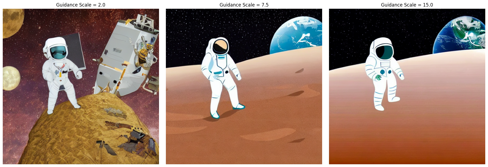
CFG Scale: 2.0 (too loose) · 7.5 (optimal) · 15.0 (over-constrained, saturated). High CFG just weights text conditioning more heavily until visual coherence breaks down.
Inference Steps — Diminishing Returns

Inference Steps: 5 (incoherent) · 15 · 30 (optimal) · 50 (diminishing returns). 50 steps costs 66% more compute than 30 with no significant quality gain — denoising has already converged by step 30.
CLIPSeg Masking + Inpainting Result

CLIPSeg auto-mask: user describes what to replace in natural language → model generates mask automatically via sigmoid thresholding (>0.5). No manual painting required. Vision model driving vision model.
Diffusion = Guided Denoising
30 vs 50 steps is a compute budget decision, not a quality decision — the model converges by step 30. CFG scale is a text-vs-image weighting parameter, not a comprehension dial. Understanding the mechanism makes every hyperparameter decision principled rather than trial-and-error.
CLIPSeg: Multimodal Pipeline
Text description → CLIPSeg heatmap → threshold → dilation → Stable Diffusion inpainting. A vision model driving another vision model. Auto-masking reduces the skill floor for inpainting — user describes what to replace in natural language rather than painting a pixel mask.
Thread from NLP
Same question as the LSA thesis: what is the right representation? For language: TF-IDF → LSA → SBERT. For images: pixels → latent space → guided denoising trajectory. Different domain, same epistemological curiosity about representation learning.
Stack: Stable Diffusion v1.5 (runwayml/stable-diffusion-v1-5 · 3.44 GB) · HuggingFace Diffusers · CLIPSeg (CIDAS/clipseg-rd64-refined) · PyTorch · Streamlit · @st.cache_resource (model cached by scheduler name) · pyngrok (Colab deployment)
PHASE 2
Computer Vision
2025 · Semantic segmentation · GIS pipeline end-to-end
35.3%
F1-Score (Dice)
U-Net baseline · binary seg
77.7%
Recall
detects most objects
17.6%
Precision
false positives high
87.9%
Overall accuracy
threshold 0.90
6×
Data augmentation
190 → 1,140 tiles
Problem: Detect and segment geospatial objects from satellite/aerial imagery (GeoTIFF) end-to-end — from raw raster data with coordinate references to a georeferenced mosaic prediction output ready for GIS analysis. Challenge: Only 190 labelled tiles available. Augmentation strategy (6× via Albumentations: flip, rotation, affine, brightness/contrast) was the primary lever, not architecture changes. The full GIS pipeline — tiling, training, and stitching predictions back into a georeferenced GeoTIFF — was built from scratch.
Prediction vs Ground Truth — Binary Segmentation Output
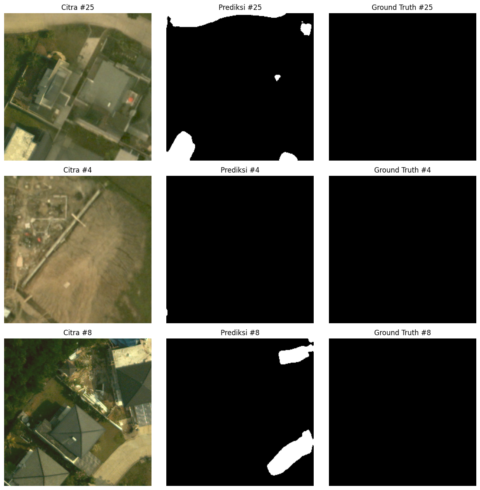
Left: Input satellite tile. Centre: Ground truth mask. Right: U-Net prediction at threshold 0.90. The model learns edge structure but struggles with small disconnected objects — a data volume problem more than an architecture problem.
Training Curve — Loss and Dice Coefficient per Epoch
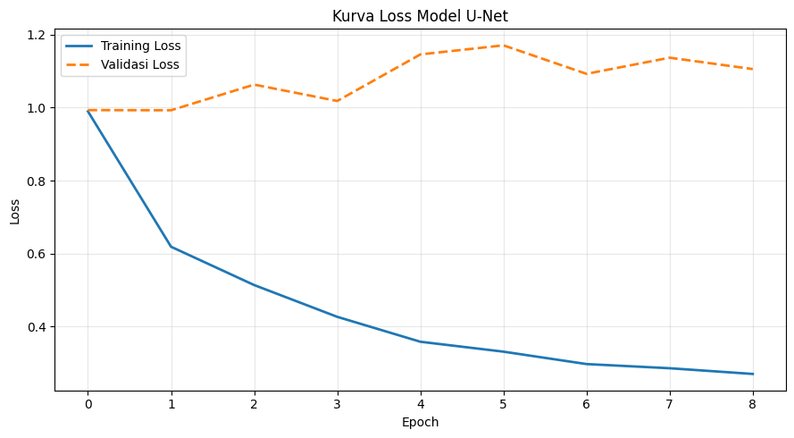
Training and validation Dice coefficient per epoch. The model converges but validation gap indicates limited generalisation from 190 original tiles — confirmed by grid search: architecture changes (filters, dropout) mattered less than expected.
Full GIS Pipeline Architecture
| Stage | Approach | Output |
|---|
| Input | Raw GeoTIFF + Shapefile (vector masks) | Georeferenced raster with coordinate system preserved |
| Tiling | Sliding window → fixed-size tiles (overlap) | 190 image-mask tile pairs for training |
| Augmentation | Albumentations: horizontal/vertical flip, rotation, affine transforms, brightness/contrast | 1,140 tiles (6× expansion) — critical given data scarcity |
| Architecture | U-Net (encoder-decoder with skip connections), binary output, threshold 0.90 | Per-pixel segmentation mask |
| Mosaic Export | Stitch tile predictions back → georeferenced GeoTIFF | Full-resolution output importable into QGIS/ArcGIS |
Honest Diagnosis
F1-Score 35.3%, IoU 21.5% — but Recall 77.7%. The model detects most objects (high recall) but generates false positives (low precision, 17.6%). Root cause: 190 training tiles is insufficient for this task. More data > better architecture.
GIS Pipeline
Output is a georeferenced GeoTIFF — coordinate system intact, importable into QGIS/ArcGIS for downstream spatial analysis. Not just a visual output; an actionable input to geospatial workflows.
Architecture Choice
U-Net’s skip connections carry edge information from encoder to decoder — preserving the spatial detail that pooling discards. That’s why U-Net is the standard for segmentation tasks where boundary accuracy matters.
Stack: TensorFlow/Keras · U-Net · Albumentations · GDAL (GeoTIFF I/O) · Rasterio · NumPy · Python
PHASE 5
KADA — Team Projects
2026 · Korea-ASEAN Digital Academy · 60 selected from 900+ applicants
2
AI coding tools
Claude · GitHub Codex
17
API route modules
Fastify TypeScript
1st
Structured team SDLC
Epic → User Story
B2B
Event management platform
Fastify · PostgreSQL · Redis
Context: Assigned to backend division on Yorindo EM·U — a B2B event management platform (Fastify TypeScript API, PostgreSQL, Redis, Docker). My role was backend development using Claude and GitHub Codex as primary AI coding assistants. Partway through, mentor reassigned me to CineTrack. The Yorindo phase was brief, but it was my first time working inside a real Agile team — and where I first understood how Epics, User Stories, and tasks actually connect in practice.
How I Used AI as a Development Tool
| Tool | How I Used It | What I Learned |
|---|
| Claude | Understanding unfamiliar codebase patterns — Fastify plugin architecture, TypeScript generics in route handlers, repository pattern implementation | AI as codebase interpreter: asking “what does this pattern do and why” is faster than reading cold docs. Changed how I read new repos. |
| GitHub Codex | Boilerplate generation for route handlers, test stubs, TypeScript type declarations. Autocomplete across the Fastify + Prisma stack | AI suggestion quality is directly tied to how well I framed the context. Vague prompts → generic code. Precise prompts → usable scaffolding. |
| AI + Code Review | Used Claude to pre-review my own PRs before submitting — catching type errors, missing edge cases, and naming inconsistencies | Self-review with AI before peer review reduced back-and-forth significantly. Treating AI as a first-pass reviewer became a habit I carried to CineTrack. |
Epic → Story → Task
First time working from a backlog with formal Epic decomposition. Seeing how a feature like “QR Check-in” breaks into stories (offline PWA, OTS registration, sync-on-reconnect) and then into tasks helped me understand that most of my previous solo projects had implicit epics — I just didn’t know the vocabulary.
Working on Others’ Code
Backend codebase was partially built before I joined. Had to read, understand, and extend existing patterns without breaking them — a different skill from greenfield development. Claude was essential for decoding unfamiliar decisions quickly.
What I Carried Forward
The AI-as-first-reviewer habit and Epic decomposition thinking directly shaped how I approached CineTrack. I proposed the user story structure for cinema analytics features and used the same Claude + Codex workflow, now with more confidence and precision.
Stack: Fastify (TypeScript, ESM) · PostgreSQL · Redis · Docker Compose · Claude (Anthropic) · GitHub Codex · Agile standups · Epic/User Story backlog · Git feature branches · PR reviews
20+
Analytics endpoints
across 4 groups (9+6+5+4)
<200ms
Query time after
composite index (was >2s)
3
Composite indexes added
via EXPLAIN ANALYZE
LLM
Business insights
from aggregated SQL data
My Role: Backend Developer — REST API (Fastify/Node.js ESM) · 20+ analytics endpoints across 4 groups · PostgreSQL CTE analytics · Redis caching · LLM business insight summaries · query optimization via EXPLAIN ANALYZE. Dynamic filter builder (parameterized WHERE to prevent SQL injection). Every analytics endpoint follows the same flow: parse params → build parameterized WHERE → Redis lookup → PostgreSQL on miss → cache → return JSON.
Trickiest query: occupancy by city — a naive JOIN averages at the wrong granularity. The correct design uses a two-layer CTE: first CTE aggregates seat counts per screening, second CTE averages per city. The LLM component receives aggregated analytics (revenue gaps, occupancy trends, time-slot performance) and returns structured JSON recommendations — managers get actionable insight without reading raw dashboards.
Challenges · Solutions · Learning
| Challenge | Solution | Key Learning |
|---|
| Naive occupancy query averaged at wrong granularity — averaging per city directly without first aggregating per screening gave systematically wrong results | Two-layer CTE: Layer 1 materializes seat counts per screening; Layer 2 averages per city. PostgreSQL optimizer materializes Layer 1 once and reuses across the final SELECT. | SQL aggregation order is a correctness issue, not a performance issue. Averaging averages is almost always wrong. CTEs make the intended aggregation grain explicit and readable. |
| Dynamic WHERE clause built from user-supplied filters created SQL injection risk | Filter builder always uses parameterized queries — whitelist of valid column names, values passed as bind parameters, never string interpolation | Dynamic filters are a classic injection surface. Whitelist column names, parameterize values — never let user strings touch query structure. |
Aggregation Order = Correctness
The occupancy calculation error isn’t a performance issue — it’s a correctness issue. Averaging at the wrong granularity produces systematically wrong numbers silently. CTEs make the intended aggregation grain explicit and readable. SQL correctness requires understanding join granularity before writing aggregations.
LLM in the Right Layer
LLM receives aggregated, typed JSON from the backend — never queries the database. LLM only handles the interpretation step: turn numbers into plain-language recommendations. LLM in the interpretation layer: auditable, cheaper, reliable. LLM in the data layer: unauditable, expensive, hallucination-prone.
Team Accountability
First project where another team’s frontend depended on my API contract. Getting the response shape right, keeping it documented, and not breaking it on refactor taught more about professional engineering accountability than any solo project. API contracts before implementation enable parallel development.
Key Takeaway — Team Backend at Production Scale: API contract design before any implementation let frontend and backend teams develop in parallel without blocking. One hour designing the interface spec saves ten hours of integration debugging. EXPLAIN ANALYZE before Redis caching identified the slow queries worth optimizing — measure before you cache.
CineTrack — KADA Team Project
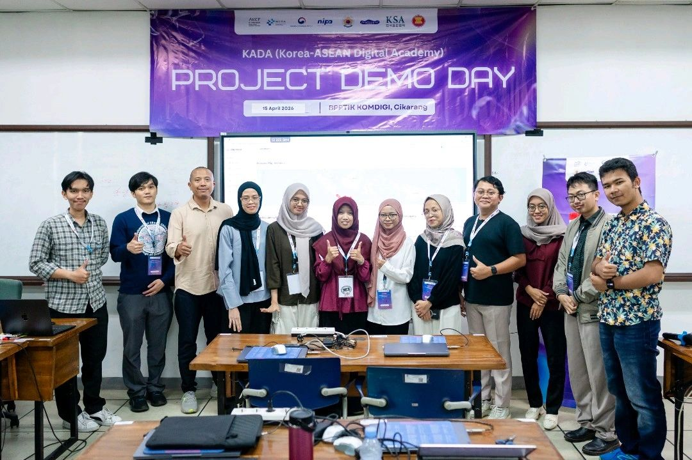
Stack: Node.js · Fastify · PostgreSQL (CTEs · EXPLAIN ANALYZE · composite indexes) · Redis (cache-aside · filter-aware keys) · Elice AI LLM · Docker